UGC Breakouts 3.0 · 17 Oct 2026
Five looks for UB 3.0, judged by who uses it
The same 5 screens in five looks. Each new look is judged by one question: does it make sense to the UGC creator paying $49 a month? C and D were designed around her; A and B are kept for comparison, and the original is the version you saw.
Who she is
Sources: NeoReach via Influencer Marketing Hub, Collabstr 2026, our capture of 22 creator tools, 13 portfolios and 136 Canva templates (16 Oct).
- Why it fits her
- Its warm palette is close to her own taste. What made it feel AI-made and bubbly was the execution: pills everywhere, soft shadows, code-font labels and confetti.
- Font
- Plus Jakarta Sans at heavy weights.
- Formatting
- Cards with soft shadows, pill chips and badges, gold score rings on the thumbnails.
- Trade-off
- The look you flagged. The coral buttons and gold score also fail accessibility contrast.
#F6F2EE · page#FF4F5E · buttons, fails contrast at 3.21:1#C9A227 · score rings, fails contrast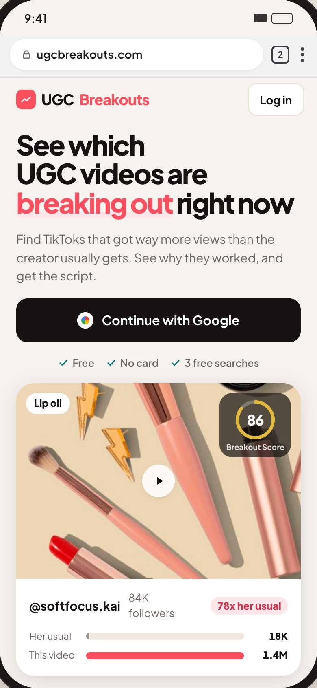
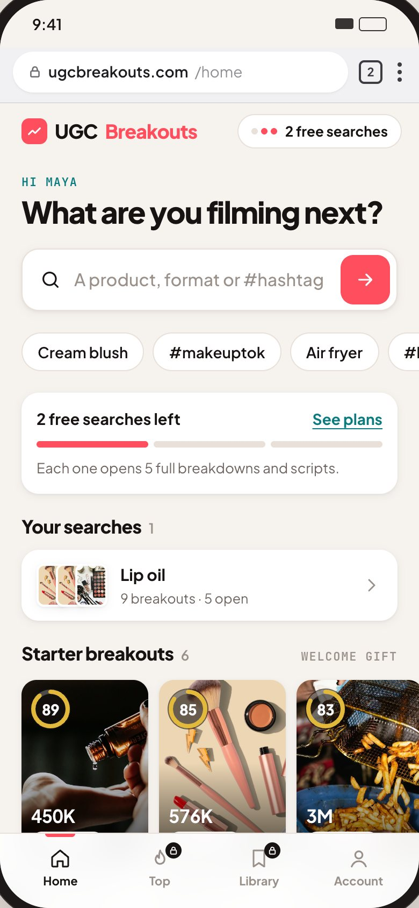
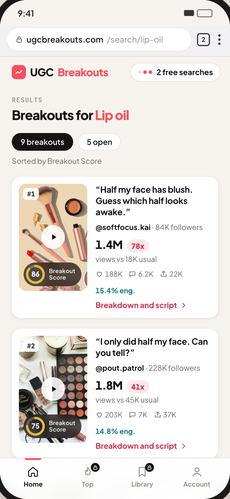
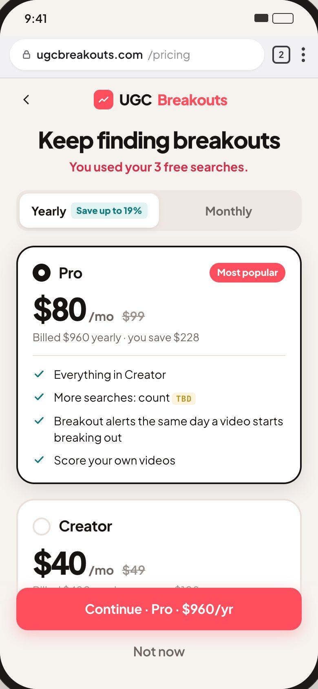
- Why it fits her
- Fast to scan when she's comparing ideas, and light like the tools she already uses (18 of 22 open light). But nothing in it says it's made for UGC creators.
- Font
- Instrument Sans, with true aligned numbers.
- Formatting
- Rows with thin dividers, like Spotify for Artists' song list.
- Trade-off
- The most generic of the five.
#FFFFFF · page#121212 · text and buttons#0A6763 · above-usual data, 6.7:1
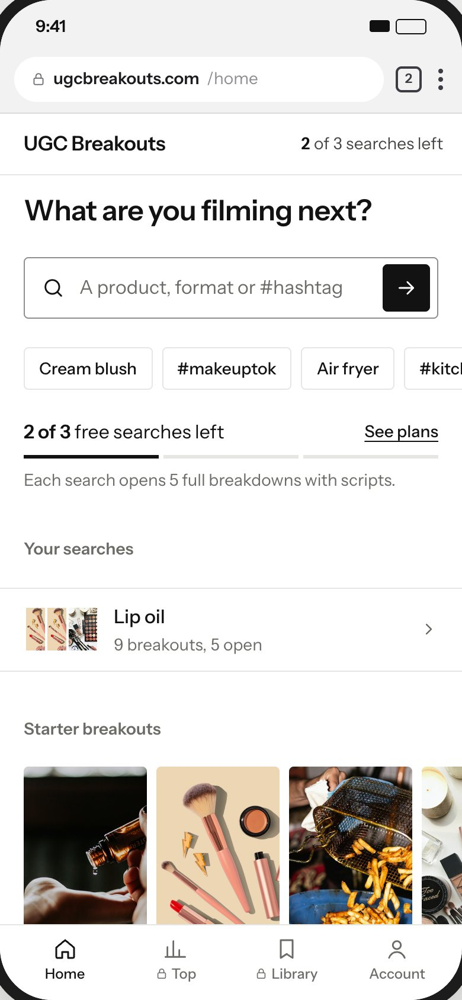
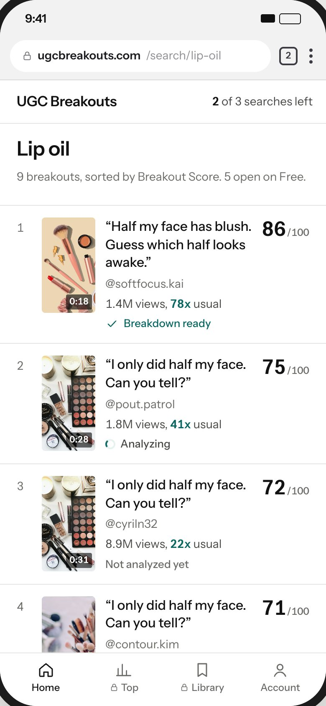


- Why it fits her
- She thinks in TikToks and judges an idea by the video first. Here the video is the whole card.
- Font
- Schibsted Grotesk.
- Formatting
- Tall video cards with the hook and numbers over the image. The sales page opens on a full-bleed video still.
- Trade-off
- Only 1 to 2 breakouts per screen, and dark is unlike the light tools she uses.
#0B0B0C · page#F2F2F0 · text, 17.6:1#3DD68C · scores and above-usual data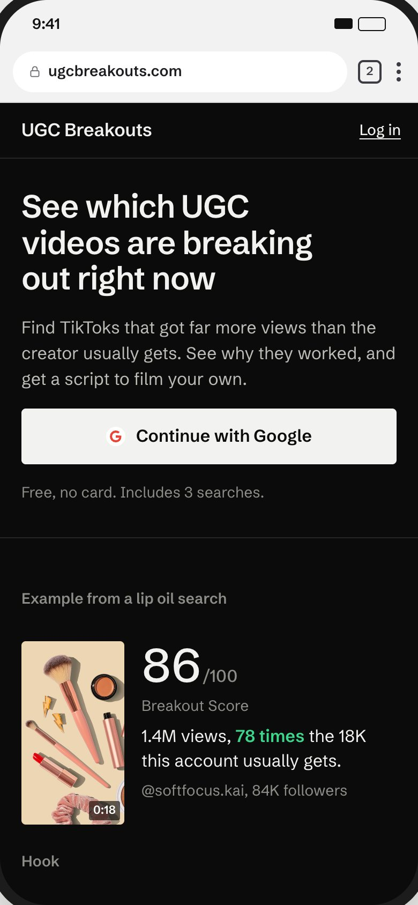
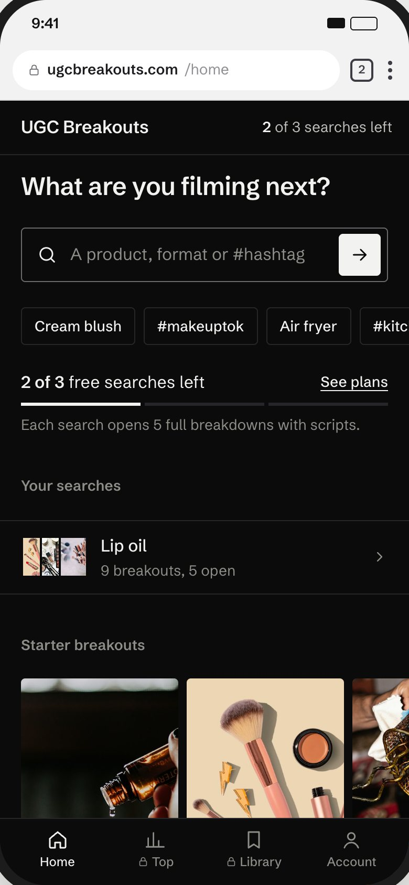
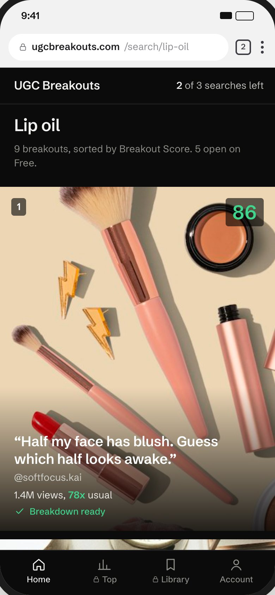
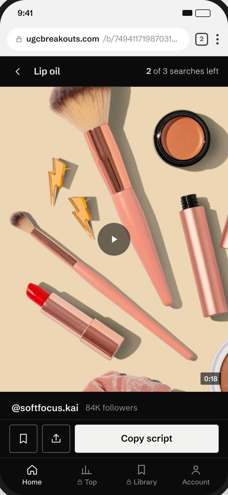
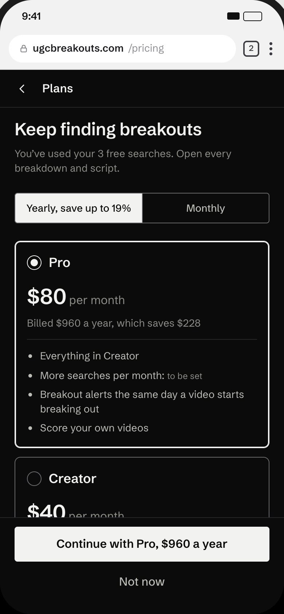
- Why it fits her
- It looks like her world: the moodboards she saves and the portfolios she makes in Canva, where 54% of templates are beige, cream or brown and 6 of 8 use a serif headline. Kept from feeling AI-made with small corners, no shadows or badges, and the thumbnails leading.
- Font
- Instrument Serif for headlines and hooks, Instrument Sans for everything else and all numbers.
- Formatting
- Two columns of tall thumbnails with the hook under each and '78x her usual views'. Pill-shaped main button, which 8 of 22 creator tools use.
- Trade-off
- Cream plus a serif is a common AI look if the details slip, so the craft has to stay tight.
#FBF9F6 · page#211C18 · text and buttons, 16:1#4F6F52 · her usual views, 5.4:1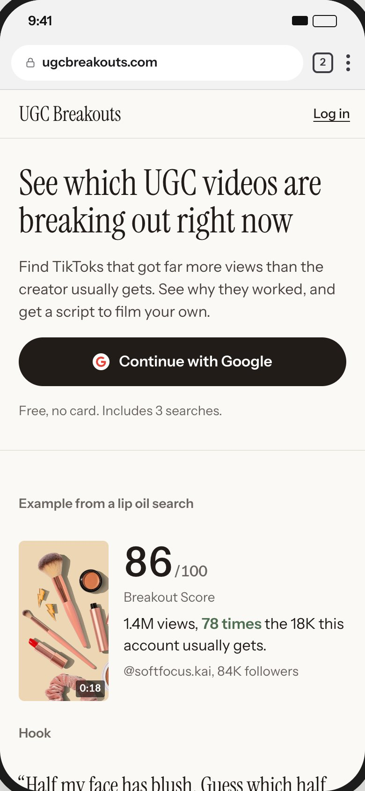
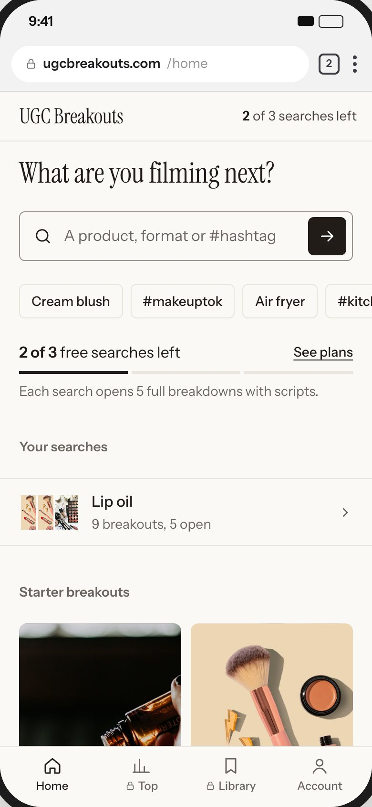
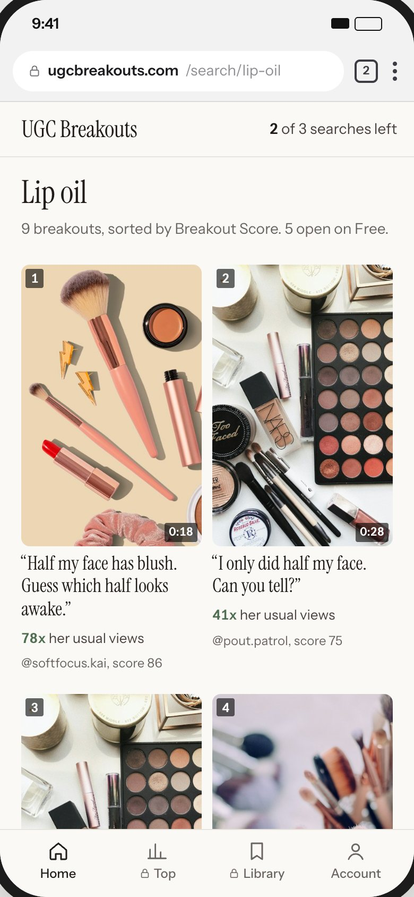
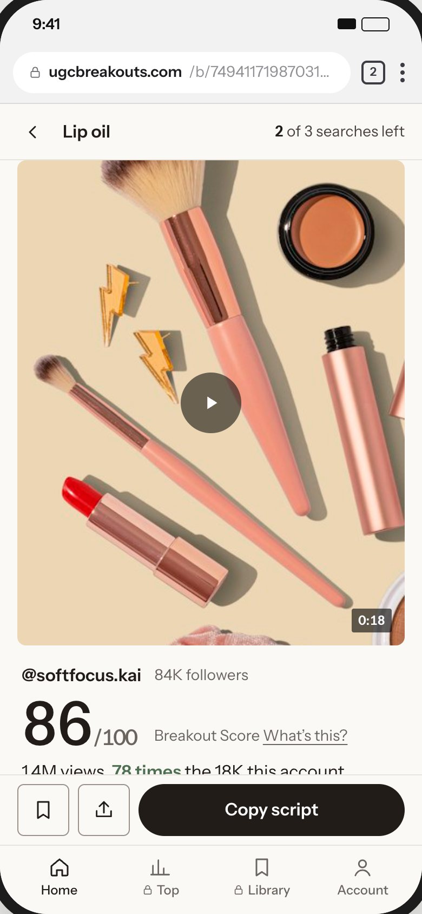
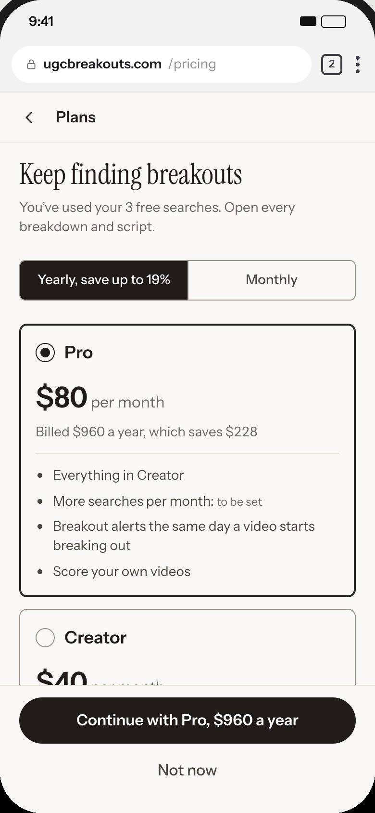
D · Brief
Each breakout becomes a brand brief: product, format, the line to open with, shots and a checklist.
Try it- Why it fits her
- Briefs are what UGC creators work from every week, so this reads as her job, not a data tool. Numbers stay in plain words: '78 times what she usually gets'.
- Font
- DM Sans, a geometric sans like the ones creator tools use, with a serif only for the line she'll say on camera.
- Formatting
- Full-width posts with the score and hook below each video. The video analysis is laid out as a brief she can film from.
- Trade-off
- The longest page per video, since the brief is spelled out in full.
#FFFFFF · page#1A1A1A · text and buttons#8C4A2F · scores and headings, 6.7:1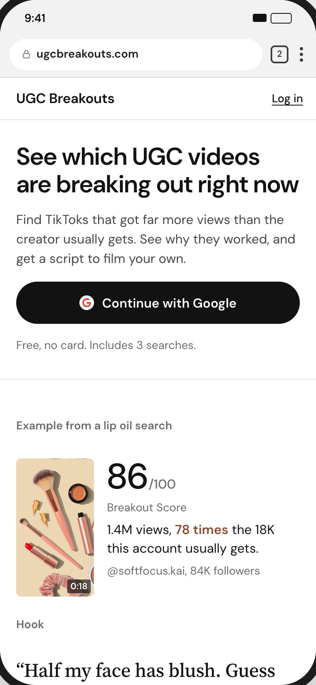
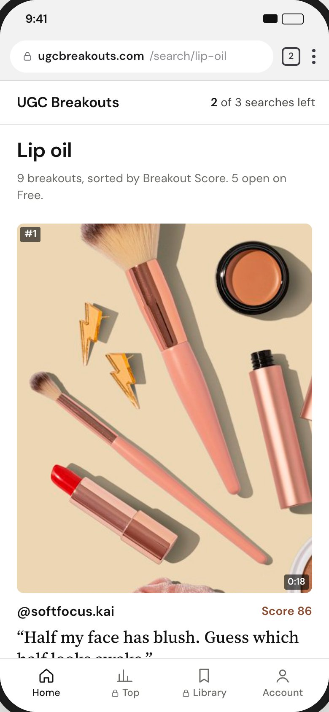
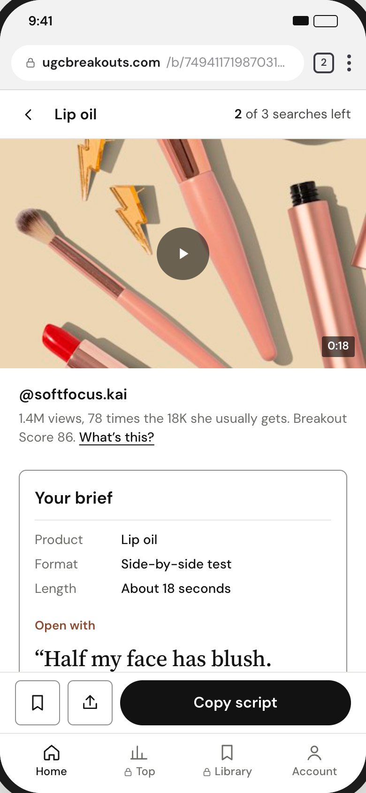
Our pick: D · Brief, with C · Board for browsing
D speaks her language: it turns each breakout into the brief she already knows how to film. C's board layout suits the moment she's browsing for ideas, so Top breakouts and the starter breakouts could use it inside D. Before we lock it, we'll show C and D to 5 to 10 real UGC creators.
What made the original look AI-made
What well-made apps do
Rules all four follow
- Small corners: 4px for controls, 8px for cards and video.
- No pill badges; ranks, scores and multipliers are text.
- No uppercase labels above headings.
- One accent color with one job.
- Shadows only on things that float.
- Lists as rows with thin dividers.
- No bounce, zoom or confetti; motion only shows state.
- Headlines in one color.
- Plain copy, no exclamation marks.
- Only true pricing claims.
- Every text color passes WCAG AA.
The 19 reference apps
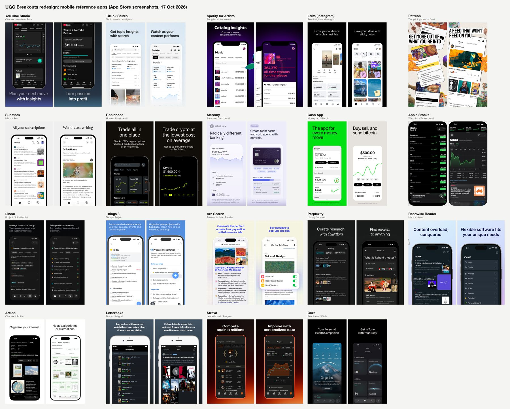
Sources
- Anthropic, frontend design skill (lists the stock AI looks)
- The Fountain Institute, 7 tells that a UI is AI-generated
- Mowgli, Why AI-built apps look the same
- UX Planet, why confetti celebrations backfire
- Labrecque and Milne (2012), color and brand personality
- Nielsen Norman Group, dark mode vs light mode
- WCAG 2.2, contrast minimum
- US Web Design System, Public Sans
- Apple App Store screenshots of the 19 reference apps, 16 to 17 Oct 2026